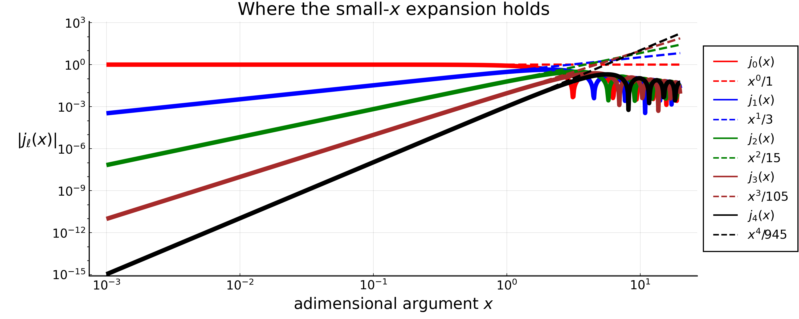
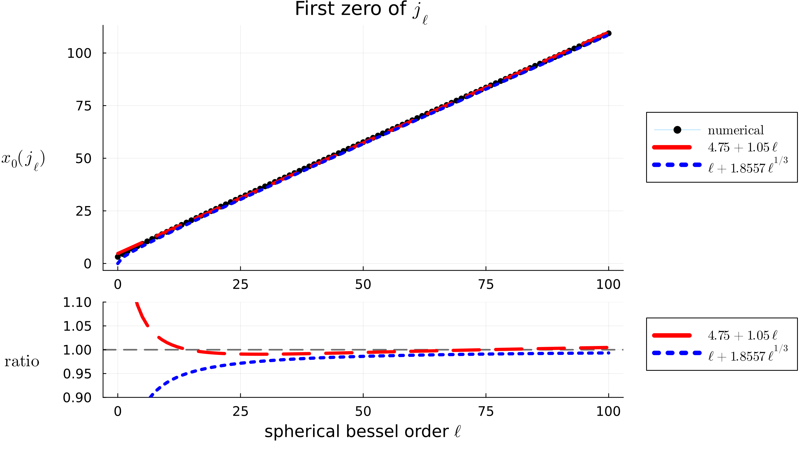

The Spherical Bessel Functions $j_\ell(x)$
Acronyms used for the sources:
- DLMF = Digital Library of Mathematical Functions
- NIST = National Institute of Standards and Technology
Sources:
- U.S. NIST DLMF, Chapter 10 - Spherical Bessel Functions
- Spherical Bessel functions Taylor series: Section 10.53
- Recurrence relations and derivatives: Section 10.51
- Relations between the two kinds: Section 10.47
Definition
Spherical Bessel functions are the solutions to the following differential equation:
\[ x^2 \frac{\mathrm{d}^2 y}{\mathrm{d} x^2} + 2 x \frac{\mathrm{d} y}{\mathrm{d} x} + \left(x^2 - \ell(\ell+1)\right) y = 0 \, .\]
They are indexed by the order $\ell$. Two independent solutions are $j_\ell(x)$ and $y_\ell(x)$, the spherical Bessel functions of the first and second kind, respectively.
These functions are related to ordinary Bessel functions by
\[ j_\ell(x) = \sqrt{\frac{\pi}{2 x}} J_{\ell + 1/2}(x) \quad ,\quad \quad \quad y_\ell(x) = \sqrt{\frac{\pi}{2 x}} Y_{\ell + 1/2}(x) = (-1)^{\ell+1} \sqrt{\frac{\pi}{2 x}} J_{-\ell - 1/2}(x) \, .\]
For integer $\ell$, the spherical Bessel functions of the first and second kind are related to each other by
\[ y_\ell(x) = (-1)^{\ell+1}j_{-\ell-1}(x) \quad , \quad \quad \quad j_\ell(x) = (-1)^{\ell}y_{-\ell-1}(x) \, .\]
In this appendix, we focus only on the spherical Bessel functions of the first kind with integer order $\ell \geq 0$.
The first few $j_\ell(x)$ are the following:
\[\begin{align*} &j_0(x) = \frac{\sin(x)}{x} \, ,\\[6pt] &j_1(x) = \frac{\sin(x)}{x^2} - \frac{\cos(x)}{x} \, , \\[6pt] &j_2(x) = \frac{3\sin(x)}{x^3} - \frac{\sin(x)}{x}- \frac{3\cos(x)}{x^2} \, . \end{align*}\]

Properties
Rayleigh's formula
\[ j_\ell(x) = (-x)^\ell \left(\frac{1}{x} \frac{\mathrm{d}}{\mathrm{d} x}\right)^\ell \frac{\sin(x)}{x}\]
Value in zero
\[ j_\ell(0) = \begin{cases} 1 \; , \quad & \ell = 0 \\[4pt] 0 \; , \quad & \forall \, \ell > 0 \end{cases}\]
Series expansion near zero
\[ j_\ell(x) = x^\ell \left( \frac{\sqrt{\pi}}{2^{\ell+1}\, \Gamma(\ell + 3/2)} + \mathcal{O}(x^2) \right) = \frac{x^\ell}{(2\ell+1)!!} \left(1 + \mathcal{O}(x^2)\right)\]
The two forms are the same thing, because $\Gamma(\ell + 3/2) = \sqrt{\pi} \, (2\ell+1)!! \, / \, 2^{\ell+1}$. The complete series is
\[ j_\ell(x) = \sum_{k=0}^{\infty} \frac{(-1)^k \, x^{\ell + 2k}} {2^k \, k! \, (2\ell + 2k + 1)!!} \; ,\]
which is the one used to derive the small-$s$ limits of the $I_\ell^n$ integrals.
Keeping only the $k = 0$ term is legitimate up to $x \simeq 1$, and not beyond:

This is precisely why the $I_\ell^n$ reach their asymptotic limits only for $s \ll 1/k_\mathrm{max}$: the argument of the Bessel function there is $q s$, and the truncation needs $q s \ll 1$ for every $q$ carrying weight in the integral.
Parity
\[ j_\ell(-x) = (-1)^\ell j_\ell(x)\]
Recursive relations
\[ j_{\ell+1}(x) = \frac{\ell}{x}j_\ell(x) - \frac{\mathrm{d} j_\ell(x)}{\mathrm{d} x}\]
\[ j_{\ell+1}(x) = \frac{2\ell+1}{x}j_\ell(x) - j_{\ell-1}(x)\]
Orthogonality
\[ \int_{-\infty}^{+\infty}\mathrm{d} x \, j_m(x) \, j_n(x) = \frac{\pi}{2m+1}\delta_{mn}\]
Note that the integration must run over the whole real axis: for $m - n$ odd the integrand is odd and the result vanishes by parity, while for $m - n$ even and $m \neq n$ it vanishes by the Weber-Schafheitlin formula below. Restricted to $[0, +\infty)$, the $m \neq n$ terms with $m-n$ odd are not zero.
Closure relation
\[ \frac{2}{\pi}\int_{0}^{\infty}\mathrm{d} x \, x^2\, j_\ell(k_1 x) \, j_\ell(k_2 x) = \frac{\delta_{\rm D}(k_1-k_2)}{k_1^2}\]
Rayleigh's expansion of plane waves
\[ e^{i\mathbf{k}\cdot\mathbf{x}} = 4 \pi \sum_{\ell=0}^{\infty} \sum_{m=-\ell}^{\ell} \, i^\ell \, j_\ell(k x) Y_{\ell m}(\hat{\mathbf{k}}) \, Y_{\ell m}^{*}(\hat{\mathbf{x}})\]
\[ e^{i\mathbf{k}\cdot\mathbf{x}} = \sum_{\ell=0}^{\infty} (2\ell+1) \, i^\ell \, j_\ell(k x) \, \mathcal{L}_{\ell}(\hat{\mathbf{k}}\cdot\hat{\mathbf{x}})\]
where $\mathcal{L}_\ell$ is the Legendre polynomial of order $\ell$.
Known infinite integrals
\[ \int_{0}^{\infty}\mathrm{d} x \, j_\ell(x) = \frac{\sqrt{\pi}\, \Gamma\left(\frac{\ell+1}{2}\right)} {2\,\Gamma\left(1+\frac{\ell}{2}\right)}\]
\[ \int_{0}^{\infty}\mathrm{d} x \, j^2_\ell(x) = \frac{\pi}{2(2\ell+1)}\]
\[ \int_{0}^{\infty}\mathrm{d} x \, x^p \, j^2_\ell(x) = \frac{ \pi \, \Gamma(1-p) \, \Gamma\left(\ell+\frac{p+1}{2}\right) }{ 2^{2-p} \, \Gamma^2\left(1-\frac{p}{2}\right) \, \Gamma\left(\ell+\frac{3-p}{2}\right) } \; , \quad -2\ell-1 < p < 1\]
(the previous one is the special case $p = 0$; outside the stated range the integral diverges, and the formula correctly returns a pole of the $\Gamma$ functions).
\[ \int_{0}^{\infty}\mathrm{d} x \, j_\ell(K x) \, j_\ell(k x)= \frac{\pi}{2(2\ell+1)}\frac{K^\ell}{k^{\ell+1}} \; , \quad \forall \, K < k\]
CAREFUL with the last one: it is the smaller of the two arguments that goes to the numerator, so the condition is $K < k$ and not the other way round. A quick sanity check is $K \rightarrow k$, which gives back $\pi / [2(2\ell+1)k]$, i.e. the previous integral rescaled; the other ordering would instead diverge for $K \gg k$, which is impossible since $|j_\ell| \leq 1$.
The first zero of $j_\ell(x)$
From linear regression on $0 \leq \ell \leq 100$, the first zero of $j_\ell(x)$ occurs roughly around
\[ x \simeq 4.75 + 1.05 \, \ell \; .\]
Note that this is an overestimate for very low $\ell$: $j_0(x)$ has its first zero at $x = \pi$, $j_1(x)$ at $x \simeq 4.493$ and $j_2(x)$ at $x \simeq 5.764$. The fit is instead accurate at large $\ell$, where the exact asymptotic expansion reads $x \simeq \ell + 1.8557 \, \ell^{1/3} + \mathcal{O}(\ell^{-1/3})$.

Reproducing the figures
The figures are not built by the documentation: they are committed under docs/src/assets/misc/, and regenerated on demand by the script in the theory/ directory. From theory/, after the one-time setup described in its README.md:
$ julia --project=. spherical_bessels.jlwhich writes the plots and the table of the first zeros in theory/spherical_bessels/ and, since SAVE_TO_DOCS = true, also refreshes the copies used by this page. The same computation is available step by step in the notebook theory/spherical_bessels.ipynb.